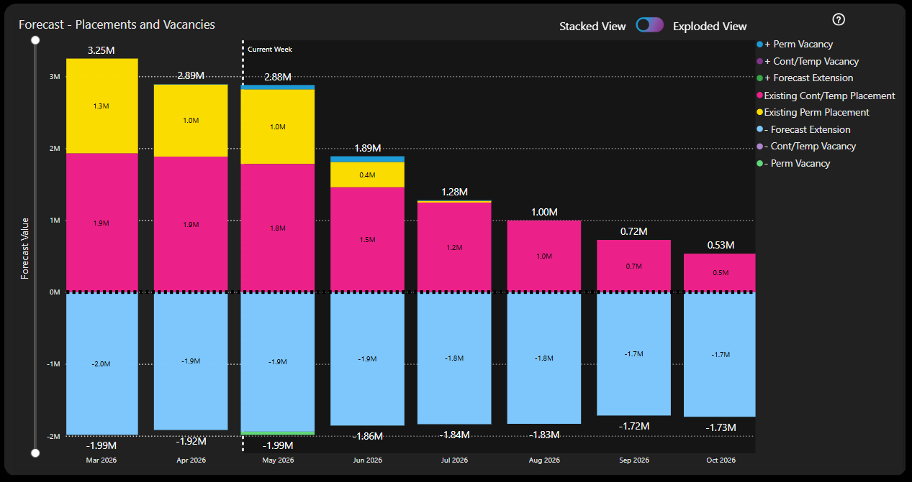
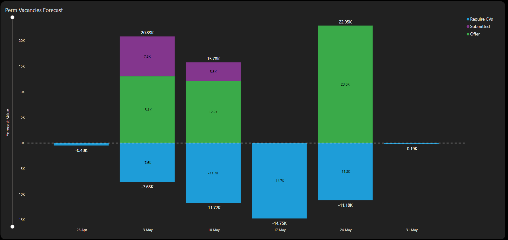
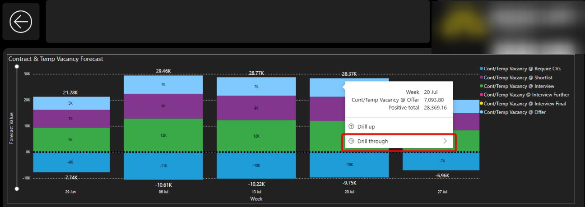
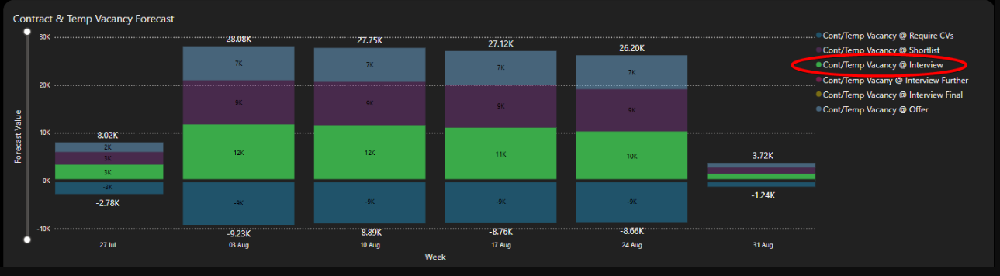
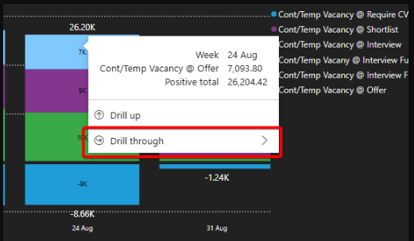
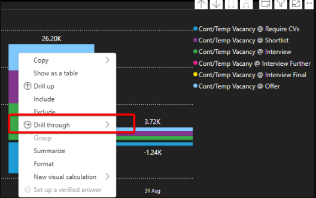

Context
We had an existing Power BI report which we were looking to enhance with a couple of high-level requirements as follows:
- Drillthroughs to the individual records based on status.
- Users having the ability to change the weightings.
Drillthroughs
The main visual in the report shows high level "buckets" of likely income with segments of the stacked bar chart for vacancies, existing placements and likely extensions.
By clicking on a segment in the visual, the user can navigate to a drillthrough page showing a more detailed breakdown of, for example, the vacancies making up the forecast so they can see another stacked bar chart with these segments representing the differently weighted vacancies based on shortlist progression.
The investigation required is to assess options for then being able to select a segment of these detailed bars (e.g. perm vacancies at offer stage, weighted at 90% of available gross profit) and navigate to a further drillthrough showing row level detail of each vacancy making up that segment of the forecast (including the ability to navigate to that record in core similarly to other reports)
Weightings
The investigation for the second item is to assess options for enabling a user to change the weightings applied to different segments that make up the forecast within the report itself.
For example, rather than apply a weighting of 30% of True GP for a Permanent vacancy at "submitted" stage, an organisation may want to reduce this to only 20%.


Below is a write up of the investigation carried out:
Problem
We are looking at enhancing the GP Forecast report and as such we want to investigate whether two suggested enhancements are feasible. The items under consideration are:
- Drillthrough to individual records.
- Users able to change weightings applied.
We need to satisfy ourselves whether these can be implemented or not. And if so, what compromises or considerations we must be aware of prior to going ahead and doing the necessary development.
Background
A drillthrough page works by telling Power BI that for this page we wish to navigate to it from one measure or a combination of them (can also drillthrough from columns) anywhere else on the report. So the functionality activates when the user filters (by making a selection, right-clicking or hovering over) a segment of a visual where the measure / column / combination is used.
The main visual in the report shows a stacked bar chart over time with "buckets" of likely income relating to vacancies, existing placements and likely extensions.
Currently there is a drillthrough in place which allows the user to navigate from, for example, the vacancies to an additional stacked bar chart split into further buckets representing each of the stages involved in the shortlist progression and the forecast income each of these stages will generate based on a set probability weighting.
The first item in this investigation is to see if it is possible to drillthrough from this more detailed stacked bar chart to a table visual detailing the individual records (vacancy records in this example) which make up the total income for that bucket.
Additionally the main visual includes two buckets for existing placement income (contract/temp and permanent placements). These two buckets do not drillthrough to the secondary stacked bar chart (since they are current / existing income rather than forecast income). So this item is also to understand if we can drillthrough from the main visual to line level data (for these buckets) rather than from the secondary stacked bar chart.
The second item is to investigate whether it is possible for the user to be able to change the weighting assigned to each of the different segments and thus make the visual react to these changes and therefore be more insightful.
Investigation
Drillthrough to Individual Records
I think the concern here was drilling through from a drillthrough page. In principle this is not a problem but of course there are things to consider when doing so.

Considerations
In theory we could have only one drillthrough page and include all the measures in the stacked bar chart. This would then mean that whichever "bucket" the user hovers over, the same drillthrough would be available and would allow the user to navigate to the same target page.
This approach has been taken by the functionality for the drillthrough from the main page to the secondary page: when we drillthrough from one of the segments above the line or the corresponding segment below the line, we end up in the same drillthrough page.
This works because the target page is identical regardless of where you drillthrough from. However this won't work here because we want to view the underlying (vacancy etc) records that make up the particular segment the user has drilled down from and the segments are all mutually exclusive. A (vacancy) record exists in one and only one segment.
So, I believe, we will need a separate drillthrough target page created for every category in each of the secondary charts.
User-Driven Weightings
The obvious solution here is to use what-if parameters - new parameters to allow the user to vary the percentage for each of the weightings via a slicer or a text box (such as in Contract Finishers). The measures are then adapted to be multiplied by this value so if the user, for example, selects 50% weighting, the measure returns 50% of the original value.
When a new numeric parameter is created, Power BI creates a one-column table in the background with each row containing each option that the user may wish to select.
The concern is the number of variables that we want to be adjusted by the user as we want the following to be user-driven:
- Vacancies weighted based on their current status (shortlisted, interview stage, offer etc.)
- Placements weighted based on their likelihood to extend.
So we could end up with multiple of these one-column tables clogging up our model.
Other approaches were tried to attempt to reduce the amount of tables that might be needed, however each approach encountered two main problems:
- Slicer interference.
- Metrics being used on the same visual.
Slicer Interference
To allow user input, we need to provide a list of values to a slicer for a user to pick from. If separate lists (i.e. separate table columns) is not the way forward then we need to look at slicers sharing a joint list of values instead.
The issue here then becomes that if the user makes a selection from slicer 1, then the underlying list of values has now been filtered to just one option (the one chosen in slicer 1) so when the user goes to slicer 2, they only have one option to choose from rather than the original full list of values.
The resolution to this is by editing interactions in the UI between the slicers - essentially telling slicer 2 to ignore slicer 1 and vice versa. This is the way that the dials were built on Manager - Performance vs Target ("MPvT").
The issue here is that the choice made in slicer 1 isn't just ignored, it's "overwritten" by slicer 2. From the backend table point of view, it shows that the table has been filtered by slicer 2 only. So any measures which are based on the percentages chosen, will all apply the percentage as per slicer 2 and slicer 1 percentage will be ignored.
Unlike in HTML we are unable to target the input value in slicer 1 and apply this to measure 1 while at the same time using the input value from slicer 2 and applying this to measure 2.
With a shared list of percentages to pick from, we're unable to apply different percentages to different measures.
(We can achieve this in the MPvT report because we essentially ring-fence each pairing of slicer and visual from each other so one slicer drives one visual and no more. A slightly different scenario.)
Metrics on a shared visual
Because the measures which are based on the slicer inputs are used in a shared visual we are unable to de-couple them from one another. If they were used on separate visuals we could edit interactions and potentially do as we did for the MPvT.
Summary
Drillthrough to Individual Records
This can be done and drilling through from a drillthrough table is not a problem. The filters applied on the original page are combined with the new ones coming from the segment that the user chooses to drillthrough from.
Storage and Performance
Additional drillthrough pages add very little additional storage overhead. Just a few extra lines in the report.json file. No additional data is added to the semantic model.
Performance-wise, the drillthrough pages don't "exist" until the user activates the drillthrough mechanism to go to the drillthrough page. At this point the table visual will render. What will decide how efficient this is from a performance point of view is not the number of pages in the report but rather the complex DAX used in the data in the table. This will therefore need careful consideration in terms of the columns to be displayed in these drillthrough tables.
Other Concerns
I actually think the biggest issue will be from the front end side of things. There are a couple of things worth calling out: 1) Maintaining the large number of drillthrough pages will be difficult from a developer point of view and 2) from an end user point of view the navigation between pages could be a confusing, overwhelming or even frustrating experience - being able to view similar looking tables but perhaps not grasping their distinction or remembering how to navigate to them the next time.
User-Driven Weightings
This is again something we can do via the native approach of What-If parameters.
Storage and Performance
The underlying tables are one-column tables with values ranging from 0% to say, 200% incrementing by 1%. This is 200 rows of integer data. For each What-If parameter. Uncompressed this won't take up much storage and the Vertipaq engine compresses columnar integer data incredibly well on top of this. Since these will all be disconnected tables, there are no relationships (which add overhead) to the dimension and fact tables to be concerned about from a performance point of view during load and refresh.
These extra tables will also have minimal effect on model refresh times since they are small number of rows and contain static integer data only (i.e. there are no calculations).
Other Concerns
Any performance issues that may arise will be felt in the report itself. And will not be as a result of the What-If parameters. Rather it will be as a result of complicated scenarios / DAX which is being recalculated as a result of the user input. And there may be an opportunity to simplify these.
There was also a question about the fact that it is not possible for the user to select a segment to then drillthrough from. This unfortunately is Power BI functionality and it is not possible to highlight one segment of a stacked bar chart. However there are a couple of interactions that may be of interest in place of this:
By selecting the relevant segment in the legend, the chart will cross-highlight:

By hovering over the relevant segment, the context menu will pop up and give the user the ability to drillthrough from that segment:

By right-clicking on the relevant segment, the context menu gives the user the ability to drillthrough from that segment:

Out of Scope
Translytical task flows allow native data write-back from a Power BI report. However this has not been considered because a) it requires a drastic change in underlying infrastructure - reliance on Fabric SQL databases and Fabric User Data Functions and b) it is a preview feature which came out very recently (in May 2025).
What Happened Next?
The team decided to implement both the drillthroughs from the drillthrough page and the what-if parameters so the user could define their own weightings.